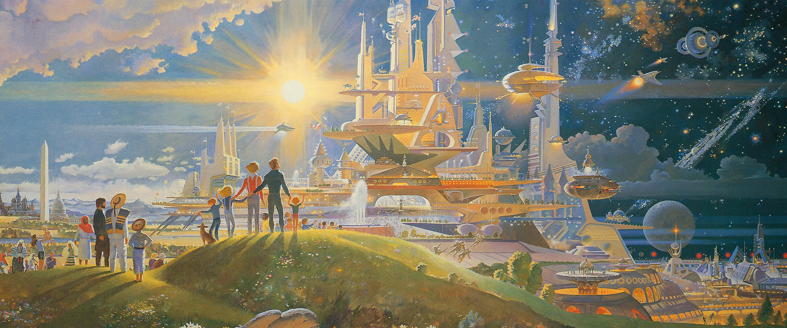
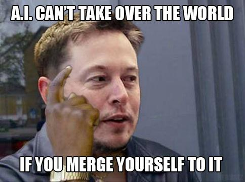

Introduction
Based on what you've heard, AI can either sound terrifying or absolutely amazing. I've heard people say AI will take over the world and wipe out humans and I've hear others say that AI will lead us to a utopia where nobody will have to work. You may be in one camp or the other, but why don't we first take a level headed approach and see what AI is really about.
Overview
- End of Humanity?
- Utopia?
- Probably Neither

End of Humanity
Many have become concerned after hearing Stephen Hawking, a renowned scientist, imply that AI "could spell the end of the human race" ( source ). He goes on to mention that AI will be able to improve itself at much more rapid pace than humans as we are limited by biology. However Hawkin admits it has a lot of potential to help peopel world wide. AI technology has been used to help Hawkin to communicate with others at a faster rate. Ai may not have our best interest in mind once it is developed to have its own interest. Another concern is that the military may misuse AI and it will unintentionally turn against us. If an enemy had AI power they could just keep sending attacks without any loss of human life.
Utopia
There have been some proponent arguing that AI will not lead us to an dystopian future but rather create a utopia for humanity. The idea revolves around the thought that AI can and will work ednlessly and for free. Though people will be losing jobs at a rapid rate as AI replaces them, it will also generate revenue for the government which could be distributed to the people ( source ). This would allow people to focus on what they trully want to do. People could do what they enjoy rather than what they are forced to do for income. If someone wanted to live their life carelessly they could, but on the other hand if someone wanted to work hard and achieve something that is also possible. Best of all, both people could achieve the same level of happiness and fullfilment from life.

Probably Neither
Lastly we have proponents that neither will happen. This in my opinion is the most reasonable opinion, but I am not rulling the other two out. Kevin Kelly things will go in the way of "protopia" a world where things improve incrementaly but no big change will occur suddenly ( source ). Just like cars have improved significantly since their first conception so will AI; however just like how cars improvements have been incremental so will AI's improvements be. As cars have improved people and laws have been able to adjust to the improvements with ease because each improvement took a long time to be implemented so it was easy to adjust. This too may be the fate of AI where minor improvemnts will happen and society will be able to adjust with it. We as humans often think ahead and think about the ramifications of our actions. Often we'll even try to think of unexpected outcomes and think of a plan for such outcomes. With this in mind I do not think AI will take over the world, but rather just improve it ever so slightly over a long course of time.
Concluding Remarks
AI isn't a fix all solution not is it a scary monster that will wipe out humanity. Rather it is a tool with a lot of potential that will bring a lot of good. For all we know we could one day implement AI into our own bodies and becomes cyborgs. I think we should be hopeful about AI but not expect anything radical.